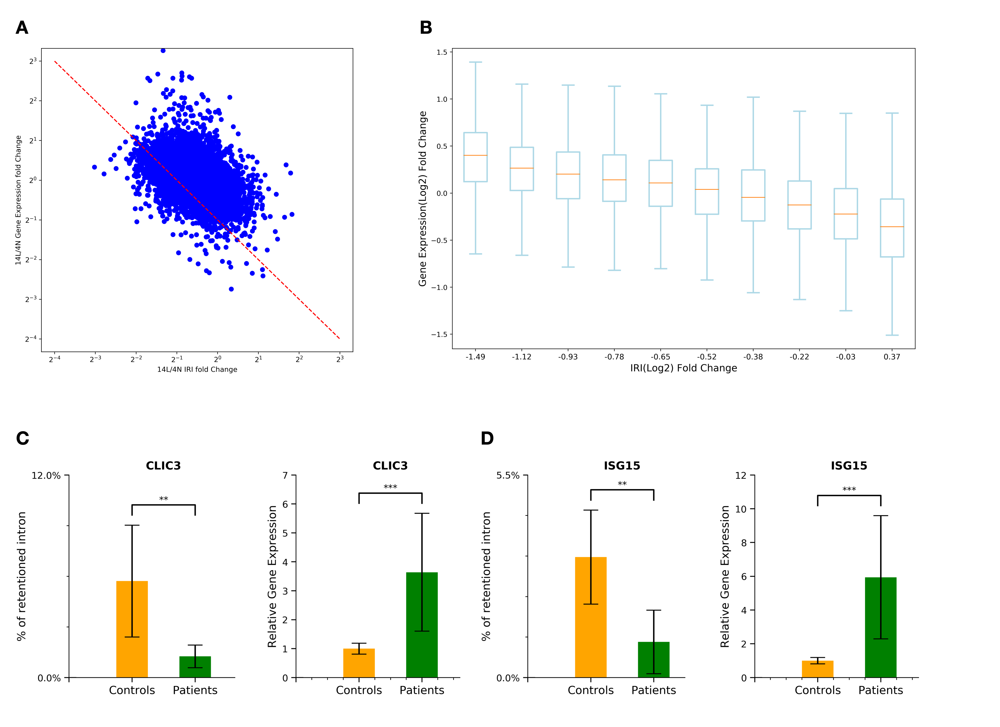
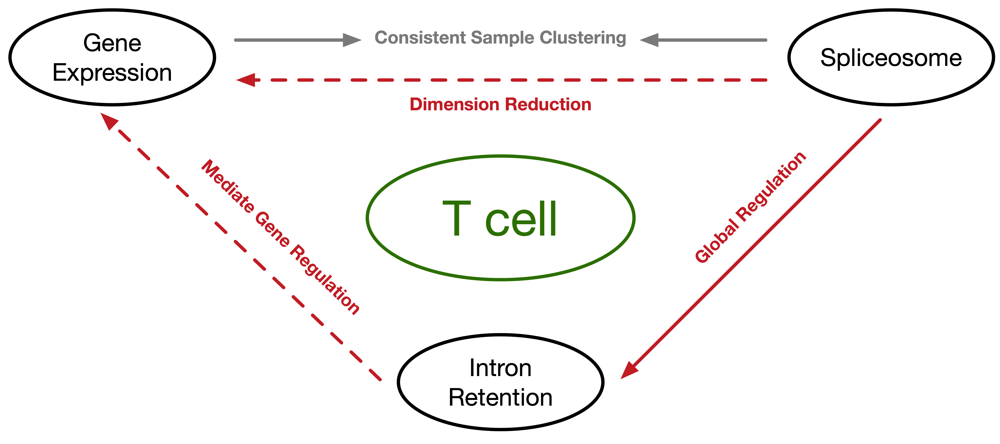
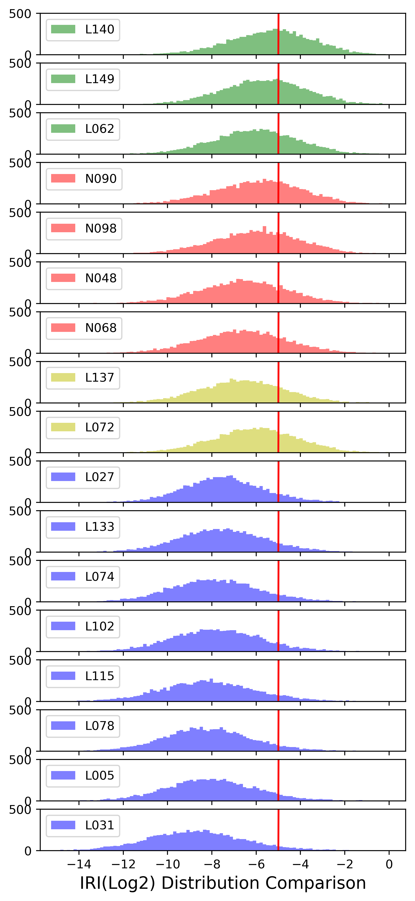
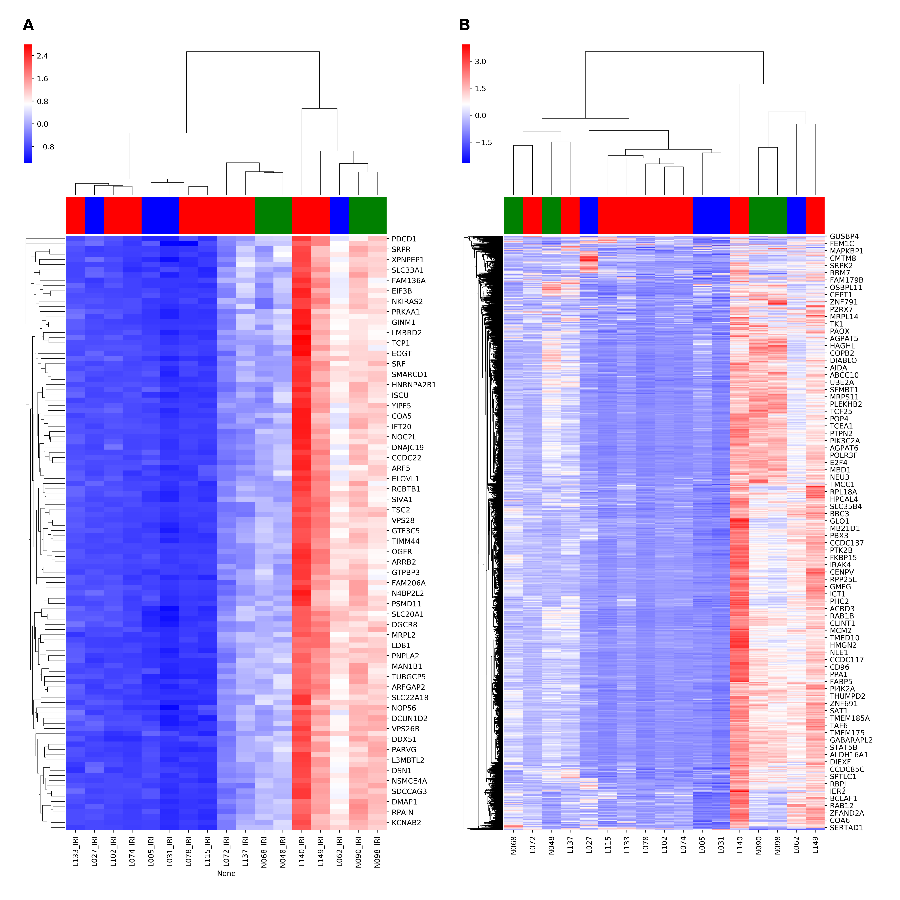
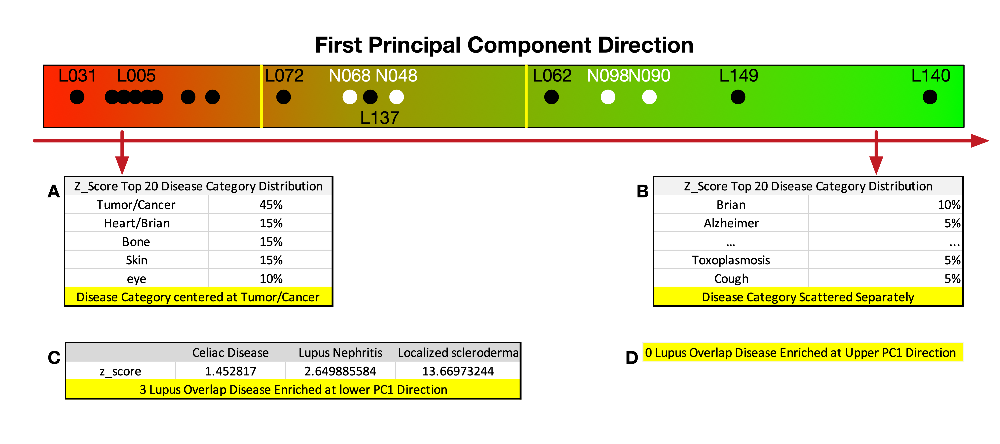

Gene Expression level is regulated by IR
All Gene - spliceosome - IR
IR pattern indicates SLE patient subgroups
- Shift From Right to Left Globally
- 3 Groups by Mold
- L140, L149, L062, N090, N098: [-5, -6]
- N048, N068, L137, L072: [-6,-7]
- Other SLE Patients Below -7
- 3L: misdiagnosed / Non-traditional Lupus
- Take stage to happen



PC1 Power
PC1 Direction, Top 100 Genes
Mantel Test Coff 0.9832
3 Groups & Distinguishing IRI Distribution
What does PC1 Emphasize?
Negative side?

PC1 Direction Disease Enrichment Analysis
- Lower PC1 VS Upper PC1
- Lupus Related Disease Got Enriched VS No Lupus Related Disease Got Enriched
- Disease Category Centered VS Disease Category Scattered Separately